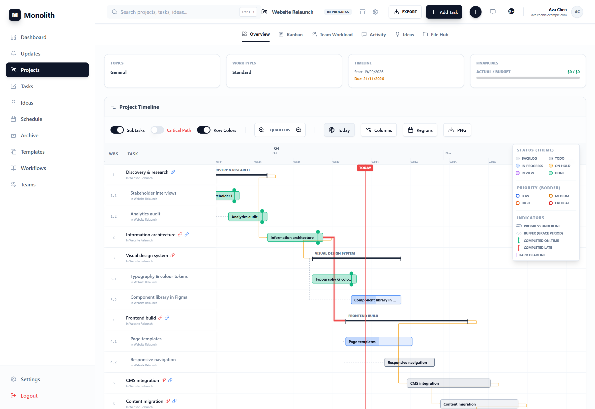

Run, use and extend Monolith
Monolith is a self-hosted project planner for technical teams: projects hold a tree of tasks of any depth, with dates, PERT estimates, dependencies and a live critical path, budgets and risk, time tracking, custom fields, automations, comments, an ideas hub, a File Hub and real-time Excalidraw sketches. AI assistants work in it through a Model Context Protocol server.
At a glance
Counts below are generated from the running code by scripts/docs/gen_reference.py, so the reference chapters never drift from the API.

What you can do
| Area | Highlights | Chapter |
|---|---|---|
| Plan | Projects with planned and hard deadlines, budget versus actual, risk; unlimited task nesting with WBS codes; FS/SS/FF/SF dependencies with lag; PERT estimates and a server-side critical path. | 3, 2.5 |
| See | Gantt (day to year zoom, PNG export), Kanban with manual order, list with filters and saved views, master schedule, dashboard KPIs, activity heatmap, team workload, risk matrix. | 4 |
| Work together | Project roles (viewer, editor, admin), threaded comments with images, an ideas hub with voting and promotion, real-time Excalidraw sketches with presence and pointers, a File Hub with previews. | 5 |
| Track | Timers and manual time entries against PERT estimates, timesheets, typed custom fields, recurring tasks, a private iCalendar feed. | 6 |
| Automate | "When / if / then" rules per project, Slack, Teams, Discord and JSON webhooks, project templates, SOP workflows with LaTeX, CSV and Excel exports. | 7 |
| Integrate | A REST API with interactive docs at /api/docs; an MCP server with 100+ typed tools so Claude and other assistants plan and update work as you. | 9, 10 |
How to read this guide
- Sections are numbered chapter.section.subsection; every heading has a link target you can share.
- Screen elements read as chips: Settings › MCP access › Create token. Keys look like Ctrl + K.
- Endpoints look like
POST /api/v1/tasks/; MCP tools likecreate_task. Both link into the reference chapters.
Callouts in blue add context.
Green ones are shortcuts and good practice.
Amber ones warn about behaviour that surprises people.
Red ones are about data loss or security.
The guide is plain HTML and CSS with no build step. Open docs/guide/index.html in a browser, or publish the folder with any static host. On GitHub the files show as source, so clone the repository to read them.
Monolith is MIT licensed. Generated parts: chapter bar, contents rails, pager, statistics, chapter 9 tool reference and chapter 10.